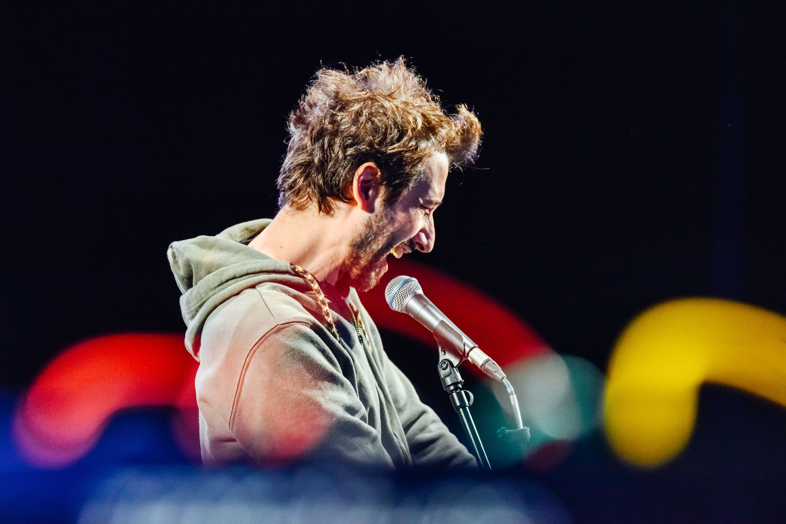

Composer, performer, and researcher. AI musical instruments, neural audio synthesis, and magnetic interactions — Intelligent Instruments Lab, University of Iceland.

Welcome! I'm an Italian artist and researcher based in Reykjavik, Iceland.
My practice embraces music performance and composition, instrument design and human-computer interaction, with a focus on interactive technologies and AI.
I'm a researcher at the Intelligent Instruments Lab, where I explore through practice research (from electroacoustic composition, performance practice, New Interfaces for Musical Expression design) and critical theory how artificial intelligence is infiltrating discourse, culture, and society.
I'm currently open to postdoctoral positions, teaching positions, and artistic collaborations.
Contact: nprivato@hi.is
In-depth exploration of NAS techniques in contemporary music.
UdK Berlin and Oxford on pouring actions as music gestures.
Master Class with IIL instruments.
With Giacomo Lepri. Neural synthesis sketches on Stacco.
Full-day IIL workshop on AI/ML instrument design.
Participants designed and performed scores on Stacco.
With Áki Ásgeirsson. Creative AI for the organ.
Emotional expression through Emo, an AI graphic score.
Integration through imaginary-to-real instrument building.
Nicola Privato
Intelligent Instruments Lab
University of Iceland · Reykjavik
Email: nprivato@hi.is